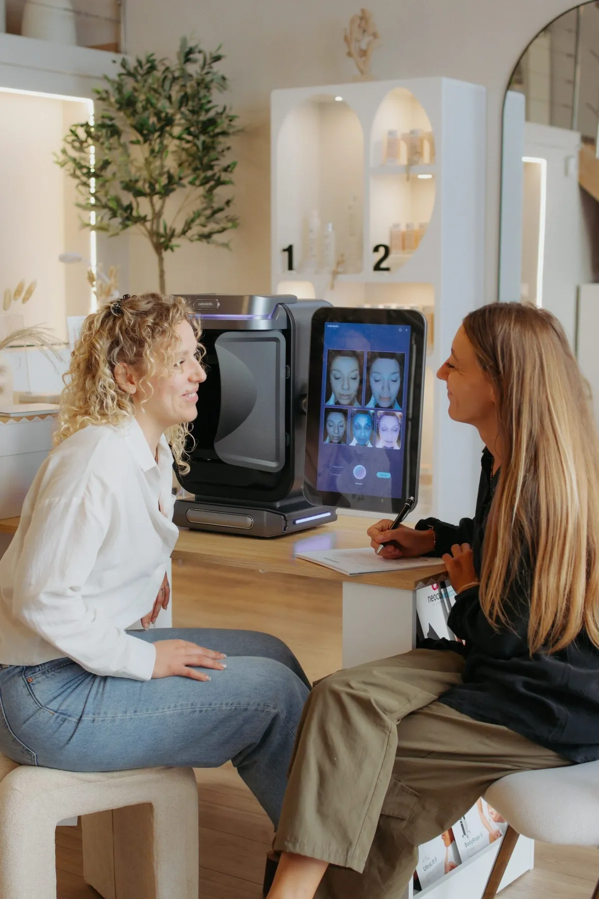

Le bon point de départ
SKINTECK ANALYSIS™
Vous n’avez pas besoin de connaître le nom d’un protocole avant de réserver. Venez avec votre préoccupation et votre objectif : l’analyse sert précisément à déterminer la suite.
- Le protocole
- Échange, observation professionnelle et technologies d’analyse
- Tarif indicatif
- 30 €, déduits si vous réalisez ensuite un soin